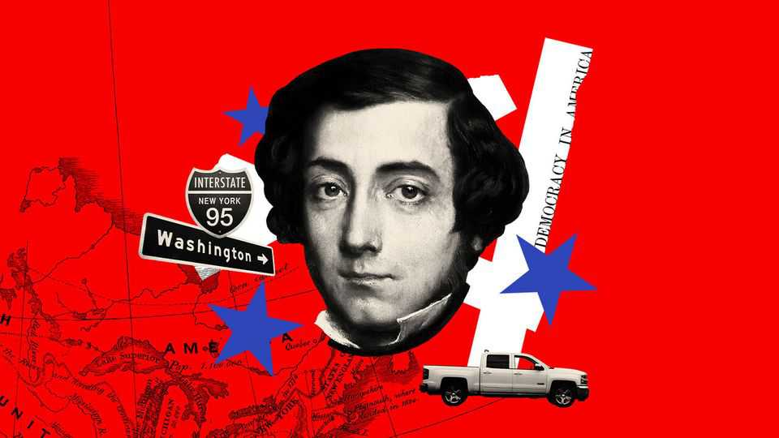

The best way to celebrate America at 250 is to get behind the wheel
Preferably with our new podcast series for company
June 11th 2026

One stereotype held by foreigners about Americans is that they are irritatingly upbeat. Picture a stranger ordering you to have a nice day, or a family declaring everything to be “so great” while exploring a drizzly, midge-infested Scottish ruin—there is only one nationality they could possibly be. This cliché is misleading, though. Americans are generally cheerful. But even in the country’s brightest moments many of them have been struck by a kind of dread about it all unravelling. “Democracy never lasts long,” wrote the second president, John Adams, in 1814. “It soon wastes, exhausts and murders itself.” That sentiment is widespread as the country turns 250.
America is feeling nostalgic as well as pessimistic on its semiquincentennial. In the country that has been inventing the future since 1776, nearly half of the population say they would rather live in the past. Most young Americans do not expect to be better off than their parents. Meanwhile, on many objective measures, the country is doing better than ever. After a dip caused by opioid overdoses and covid-19, life expectancy is back to the highest level in history. The economy has been growing robustly, unlike in other Western countries. Income inequality after taxes is lower than it was a decade ago. American firms are pre-eminent in artificial intelligence, biomedicine, entertainment and space technology. The Kennedy Centre is getting its name back.
The distance between the data and the vibes is the central puzzle of the United States in the 2020s. Exploring that was the impulse behind the making of a new podcast we are launching this week to celebrate this spectacular country on its big birthday. The six-part series is a road trip in the company of Alexis de Tocqueville, a French aristocrat who loved the place and wrote a prescient book about it in the 1830s, “Democracy in America”. This road trip took The Economist from New York’s aristocracy to a maximum-security prison in the Hudson Valley; from a fight over a data centre in rural Michigan to Harvard University; and from a sheriff’s office in Ohio to Donald Trump’s court in Palm Beach, via plenty of other places. Wherever possible, we spoke with the same sorts of people Tocqueville did, to compare America then and now.
As on any good road trip, unplanned encounters in diners along the way and various logistical snafus added to the texture. Long stretches behind the wheel provided time to think, listen and gaze out of the window. What did we find?
One conclusion was that if all you know about America is its politics, you will draw unrealistically gloomy conclusions. More than half of Americans now think their fellow citizens are morally bad. No other country in the West comes close to that level. Henry Adams (the second president’s great-grandson) called politics “the systematic organisation of hatreds”. American ingenuity has been applied to this field, too: the hatreds seem better organised than at any time since the 1960s. But go and talk to people in person, from purple-haired activists to rural Trump-loving sheriffs, and you will find that they agree on a surprising amount.
A second conclusion is that Americans who see their homeland through their phones are looking in a mirror that is horribly distorted. In a continent-size country of 340m there is always something ugly somewhere. A few decades ago a lot of far worse things were ignored. That was not better, even if it felt better. The risk now is that people support bad policies because they have a misleading picture of what is wrong.
What is the answer to this? Hit the road yourself. Or if gas prices make that tricky, listen to the podcast. Americans are thoughtful and generous. For most of them, politics is something peripheral that happens a long way away. “Never have a people been blessed with such happy, dynamic conditions of existence,” Tocqueville wrote. Bonne anniversaire. ■
Subscribers to The Economist can sign up to our Opinion newsletter, which brings together the best of our leaders, columns, guest essays and reader correspondence.